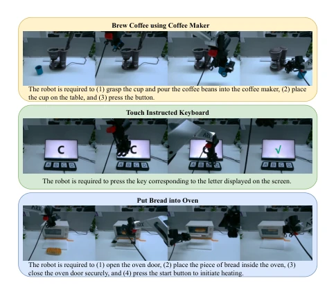
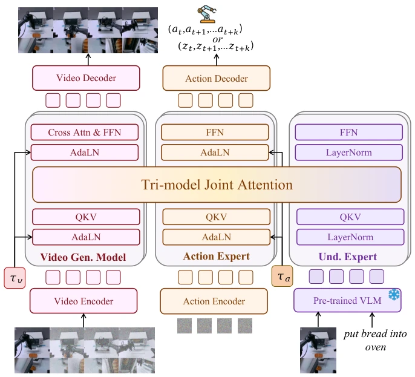
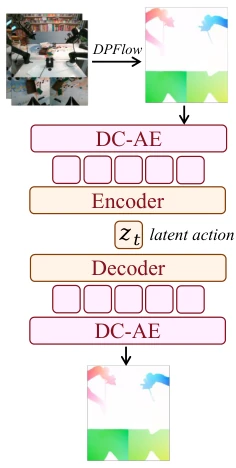
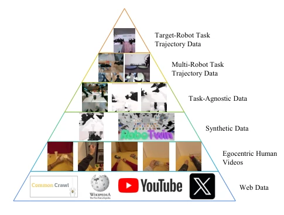
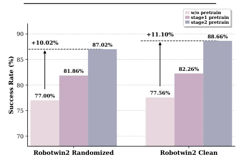
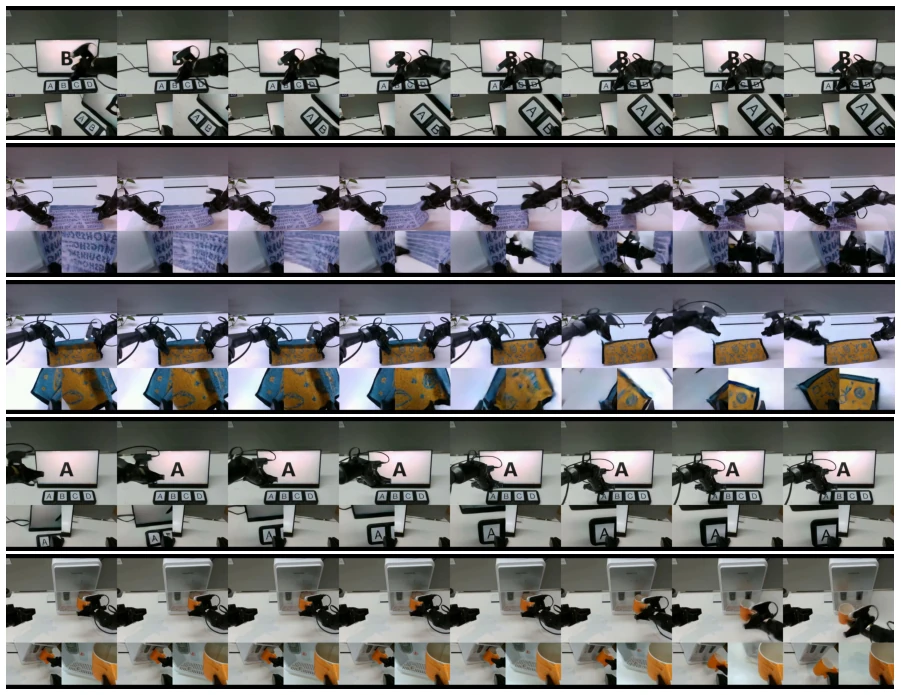
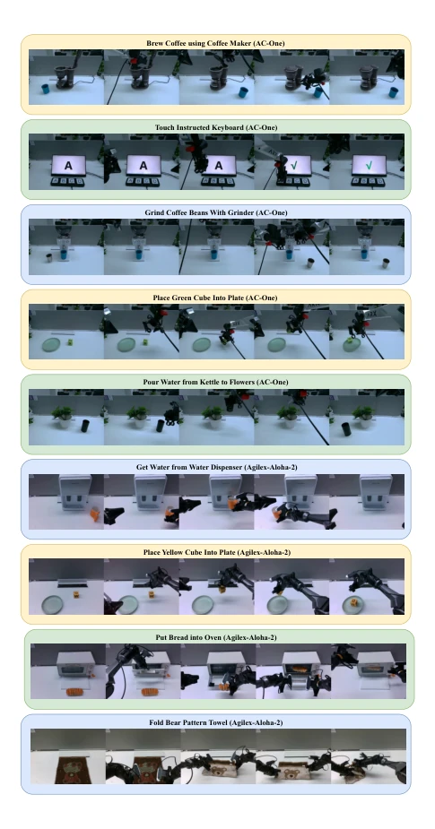
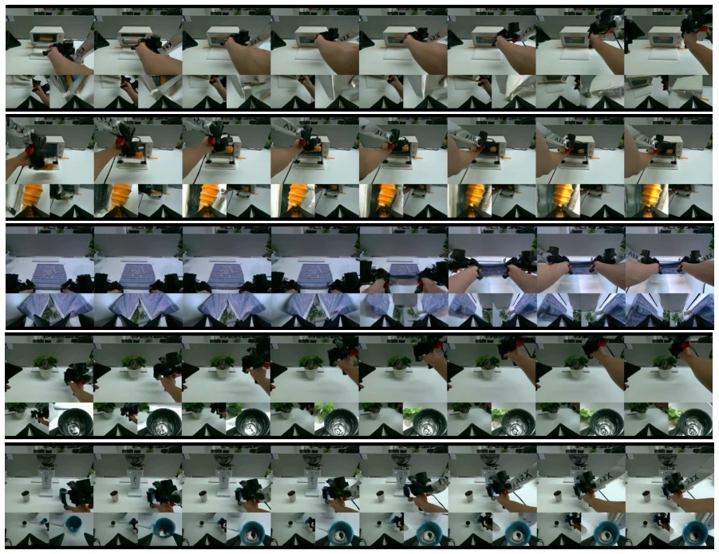
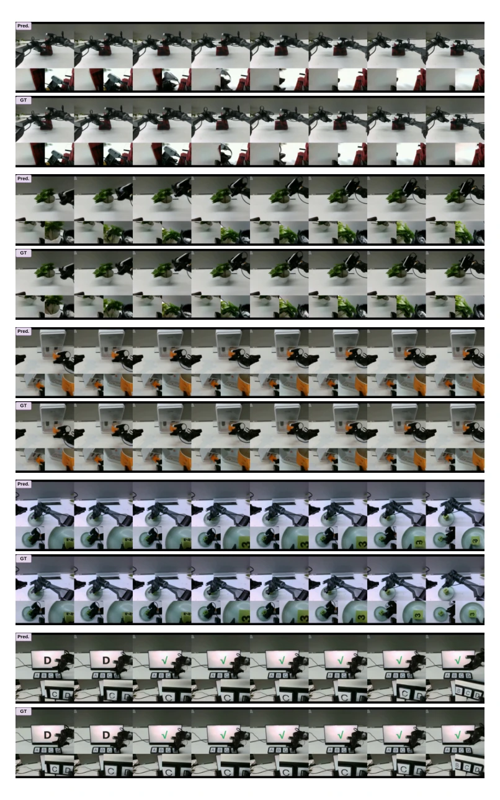
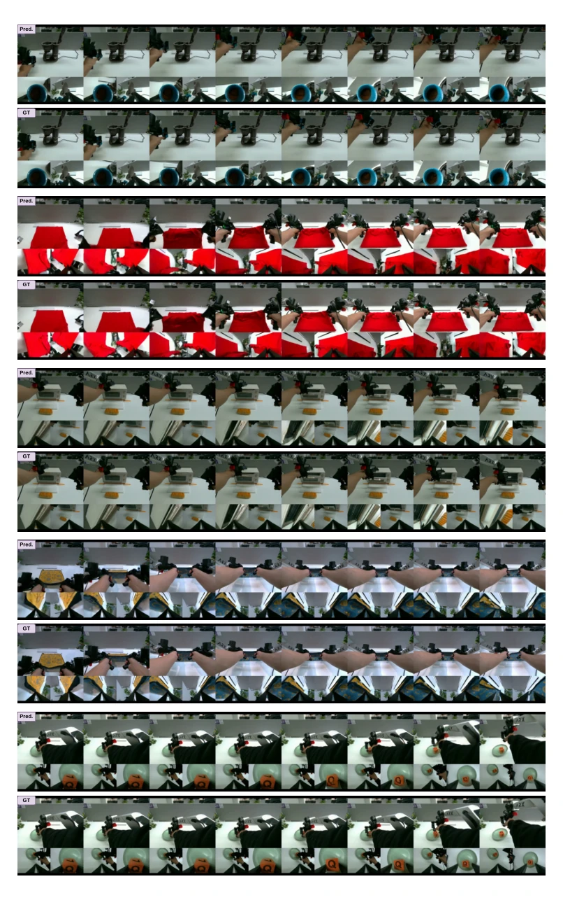

This paper attempts to combine the "five poisons" of embodied intelligence (VLA, WM, IDM, VGM, Joint) into a single pot. Motus indeed did not play tricks, directly implementing the MoT architecture plus optical flow latent actions, maximizing both simulation and real-world performance. However, the so-called "unification" is more like forcibly stitching existing VLM and VGM experts using Joint Attention; although the UniDiffuser scheduler is quite smart, it essentially still relies on pre-trained bases. The biggest drawback might be the computational resource requirements of "optical flow latent actions", after all, calculating optical flow then compressing it, will inference latency collapse? But in the face of +45% simulation improvement, this flaw can be forgiven. In short, this is one of the attempts closest to a "general-purpose humanoid robot foundation model" currently, although not yet at AGI, at least it makes the robot no longer a mute that only knows how to tighten screws.
The core pain point of embodied intelligence lies in "fragmentation". Existing methods either do VLA [5, 8, 11, 26, 31, 36, 60, 65] to learn static policies, or do WM [4, 7, 19, 21, 25, 28, 39, 41, 53, 56, 62] to predict the future, even those attempting to combine VLA and IDM like F1 [32] exclude world models, resulting in incomplete capabilities. This fragmentation prevents models from simultaneously possessing understanding, imagination, prediction, and planning capabilities. More fatal is the data issue: action spaces vary greatly due to robot morphology differences, and internet videos lack action labels, making it difficult for action experts to utilize large-scale heterogeneous data for pretraining. Motus aims to solve these two fundamental challenges: how to unify five distributions under a single framework, and how to learn general motion priors using unlabeled videos. Existing unified world model UWM [64] attempts unification but lacks VLM understanding or VGM physical priors; Motus fills this gap by introducing pre-trained experts.

Figure 5. Task Definitions and Visualizations. For each task, we describe its language instruction and definitions of each sub-task.
Motus's overall process is divided into three stages: video dynamics learning, action representation pretraining, and target robot fine-tuning. Data-wise, a six-layer pyramid is constructed, from Web data to target robot trajectories. The architecture core is MoT (Mixture-of-Transformers), containing three experts: understanding, video generation, and action, sharing multi-head self-attention layers through Tri-model Joint Attention, preserving expertise while fusing knowledge. The scheduler adopts a UniDiffuser style, assigning different timesteps and noise scales for video and actions, supporting flexible switching of inference modes (such as VLA, WM, etc.). The key innovation lies in "Latent Action": utilizing Optical Flow as motion expression, compressed into low-dimensional tokens via DC-AE, serving as "delta action" to supervise the action expert. This enables the model to learn motion priors from unlabeled videos and align with the real control distribution through a small number of action labels. During training, 90% unlabeled optical flow data and 10% labeled trajectories are mixed to achieve cross-morphology action transfer. Additionally, an Action-Dense Video-Sparse strategy is adopted to balance token counts and prevent the model from overfitting video prediction.

Figure 1. Motus Architecture. Here, at . . . at+k are actions, zt . . . zt+k are latent actions, and τv and τa are the rectified flow timesteps for the video generation model and the action expert, respectively.

Figure 3. The Latent Action VAE.

Figure 4. The Embodied Data Pyramid categorizes data into six levels, from Level 1 at the base to Level 6 at the top. Data quantity decreases from bottom to top, while data quality increases. The order of Levels 3 and 4 may sometimes vary.
Experiments cover simulation and real-world. Simulation uses RoboTwin 2.0, containing 50 tasks and randomized scenes (background, lighting, height perturbation), comparing against π0.5 [8] and X-VLA [60]. Motus shows significant average success rate improvement under randomized settings, 45% higher than π0.5 and 15% higher than X-VLA. Real-world testing is conducted on AC-One and Agilex-Aloha-2, tasks include folding towels, making coffee, and other long-horizon tasks, evaluated using partial success rate. Motus outperforms π0.5 in most tasks, with improvement magnitude of 11%~48%. Ablation studies show that the pretraining stage (especially Stage 2 latent action pretraining) is crucial for performance; models without pretraining show a significant drop. This validates the effectiveness of unified modeling and large-scale heterogeneous data pretraining.

Figure 6. Ablation in RoboTwin 2.0 Randomized Multi-task Setting. The figure presents the total success rates (%) of the original Motus (Stage 2 Pretrain) and its two variants: Without Pretrain and Stage 1 Pretrain.

Figure 7. Visualization of Motus’s VGM mode on Agilex-Aloha-2.
其他图片Other Figures

Figure 8. Demonstrations of Motus for real-world tasks execu- tion featuring 2 robots and 9 tasks.

Figure 9. Visualization of Motus’s VGM mode on AC-One.

Figure 10. Visualization of Motus’s World Model Mode on Agilex-Aloha-2 Dataset.

Figure 11. Visualization of Motus’s World Model Mode on AC-One Dataset.